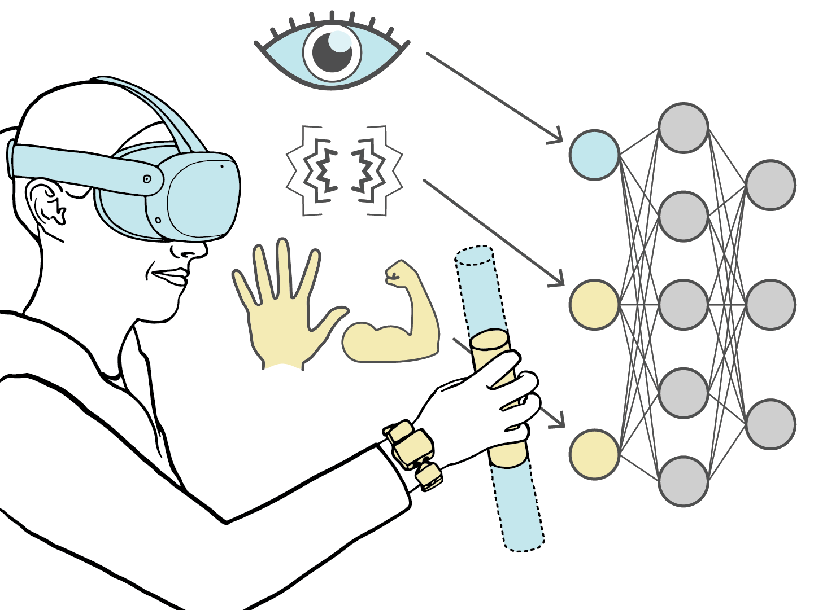

Sensory Congruence & Conflict
In virtual and augmented environments, what people see and what they feel often disagree. We study how users adapt to these mismatches and build models that can predict perception from sensory interaction traces.